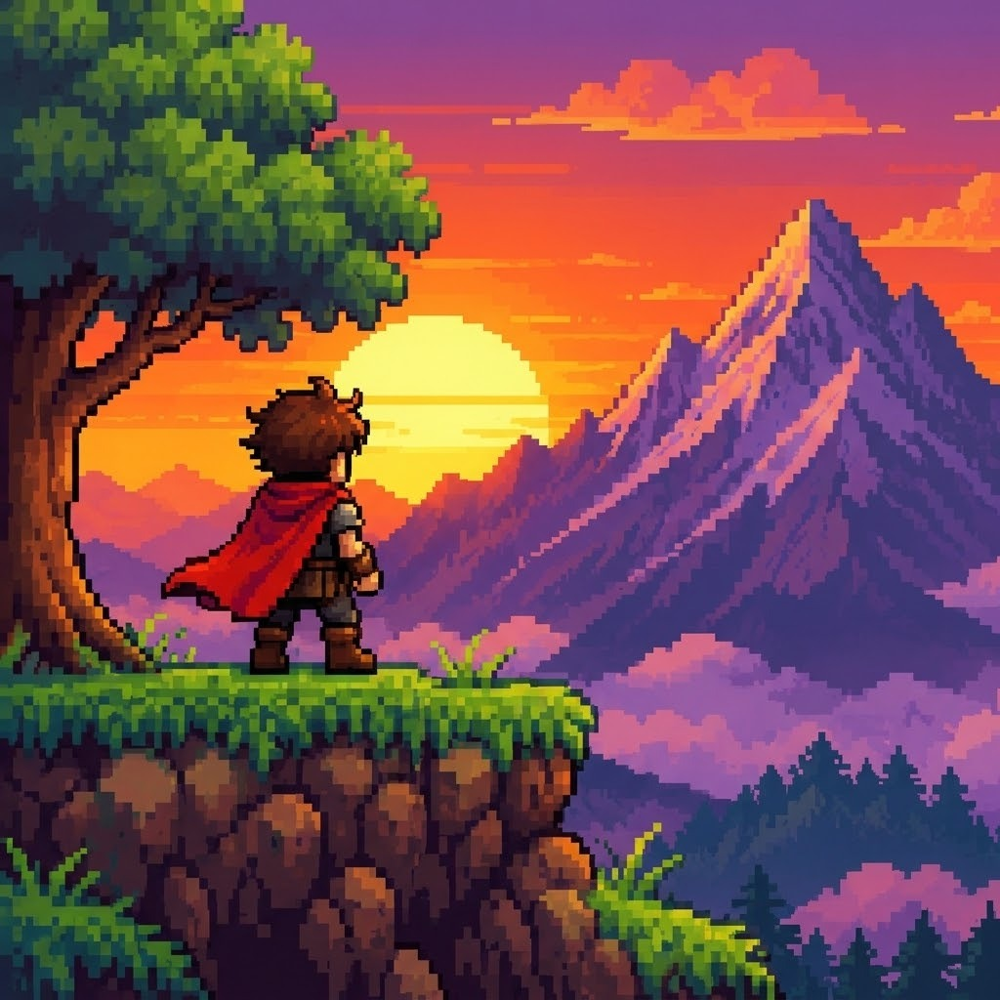

Indies: criatividade sem grandes estúdios
Indies são jogos feitos por equipes pequenas, às vezes por uma única pessoa, e muitos deles viraram referência.

O que torna um indie especial
Sem a pressão de grandes orçamentos, os estúdios independentes podem arriscar ideias diferentes, estilos visuais próprios e temas pouco comuns. Esses jogos costumam ter preços mais baixos e duração mais enxuta.
Indies que viraram referência
- Celeste (2018): um jogo de plataforma sobre escalar uma montanha, com modo de assistência para ajustar a dificuldade.
- Hollow Knight (2017): uma exploração num reino subterrâneo desenhado à mão.
- Stardew Valley (2016): uma simulação de fazenda criada por uma só pessoa, Eric Barone.
- Undertale (2015): de Toby Fox, permite resolver batalhas sem machucar os inimigos.
- Hades (2020): um jogo de ação do estúdio Supergiant, ambientado na mitologia grega.
Indies brasileiros
Dandara (2018): um jogo de aventura em que a heroína não anda, ela salta entre superfícies de sal. Foi feito pelo estúdio Long Hat House.
Horizon Chase Turbo (2018): um jogo de corrida da Aquiris inspirado nos clássicos de arcade dos anos 1990.
Como descobrir novos indies
As lojas digitais de jogos costumam ter seções dedicadas a indies, e muitos títulos oferecem demonstrações gratuitas. Experimentar antes de comprar é uma boa forma de achar o que combina com você.